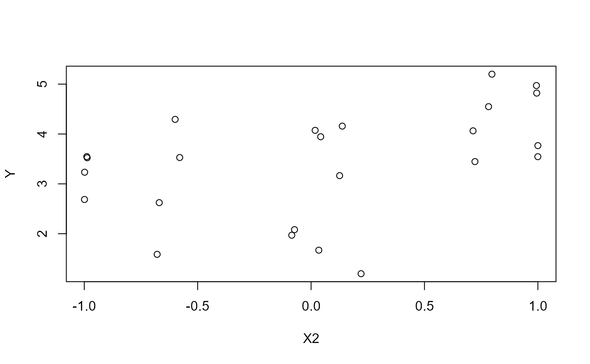

Laplace's Saturn data.
Saturn.RdWith this dataset Laplace (1787) showed that "noticed defects in the then existing tables of the motions of Jupiter and Saturn" were, de facto, due to "a very long, 917-year, periodic inequality in the planets' mean motion, due to their mutual attraction and the coincidence that their times of revolution about the sun are approximately in the ratio 5:2".
Usage
data(Saturn)Format
A data frame with 24 observations on the following 6 variables.
Equationan integer vector, id of the Equation
Yearan integer vector, year of the observations
Ya numeric vector, adjusted measure of the observed longitude of Saturn, in minutes
X1a numeric vector, the rate of change of the mean annual motion of Saturn
X2a numeric vector, the rate of change of the eccentricity of Saturn's orbit
X3a numeric vector, a variable compound of the rate of change of Saturn's aphelion minus rates of change of the mean longitude of Saturn in 1750, multiplied by 2 times the mean eccentricity of Saturn
Details
Stigler (1986, pp. 25-39):
"In 1676 Halley had verified an earlier suspicion of Horrocks that the motions of Jupiter and Saturn were subject to slight, apparently secular, inequalities. When the actual positions of Jupiter and Saturn were compared with the tabulated observations of many centuries, it appeared that the mean motion of Jupiter was accelerating, whereas that of Saturn was retarding. Halley was able to improve the accuracy of the tables by an empirical adjustment, and he speculated that the irregularity was somehow due to the mutual attraction of the planets. But he was unable to provide a mathematical theory that would account for this inequality.
If the observed trends were to continue indefinitely, Jupiter would crash into the sun as Saturn receded into space! The problem posed by the Academy could be (and was) interpreted as requiring the development of an extension of existing theories of attraction to incorporate the mutual attraction of three bodies, in order to see whether such a theory could account for at least the major observed inequalities as, it was hoped, periodic in nature. Thus stability would be restored to the solar system, and Newtonian gravitational theory would have overcome another obstacle.
The problem was an extraordinarily difficult one for the time, and Euler's attempts to grope for a solution are most revealing. Euler's work was, in comparison with Mayer's a year later, a statistical failure. After he had found values for n and u, Euler had the data needed to produce seventy-five equations, all linear in x, y, m, z, a, and k. He might have added them together in six groups and solved for the unknowns, but he attempted no such overall combination of the equations.
Laplace had come quite a bit closer to providing a general method than
Mayer had. Indeed, it was Laplace's generalization that enjoyed
popularity throughout the first half of the nineteenth century, as a method that
provided some of the accuracy expected from least squares, with much less
labor. Because the multipliers were all -1, 0, or 1, no multiplication, only
addition, was required."
Source
Stigler, Stephen (1975). "Napoleonic statistics: The work of Laplace", Biometrika, 62, 503-517.
References
Stigler, Stephen M. (1986). The History of Statistics: The Measurement of Uncertainty before 1900. Cambridge, MA: Harvard University Press, 1986, Table 1.3, p. 34.
Examples
data(Saturn)
# some scatterplots
pairs(Saturn[,2:6])
plot(Y ~ X1, data=Saturn)
plot(Y ~ X2, data=Saturn)

# Fit the LS model
fit <- lm(Y ~ X1 + X2 + X3, data = Saturn)
# Same residuals of Stigler (1975), Table 1, last column.
library(sp)
dd2dms(residuals(fit)/60)
#> [1] 0d1'36.557"W 0d0'5"W 0d1'20.522"E 0d0'29.5"E 0d0'32.846"E
#> [6] 0d1'5.731"E 0d0'8.611"E 0d0'52.431"E 0d0'28.797"W 0d1'23.269"W
#> [11] 0d0'22.327"W 0d0'7.241"E 0d0'53.009"E 0d0'56.267"E 0d0'49.954"E
#> [16] 0d0'3.021"W 0d1'40.877"W 0d1'35.443"W 0d0'28.785"E 0d1'34.181"W
#> [21] 0d0'26.548"W 0d0'18.818"E 0d0'15.347"E 0d0'56.958"E